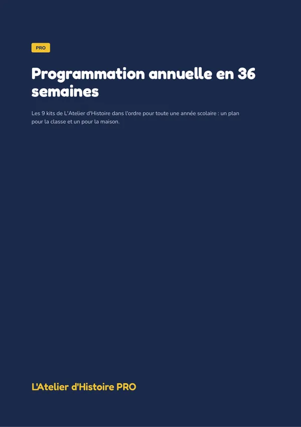
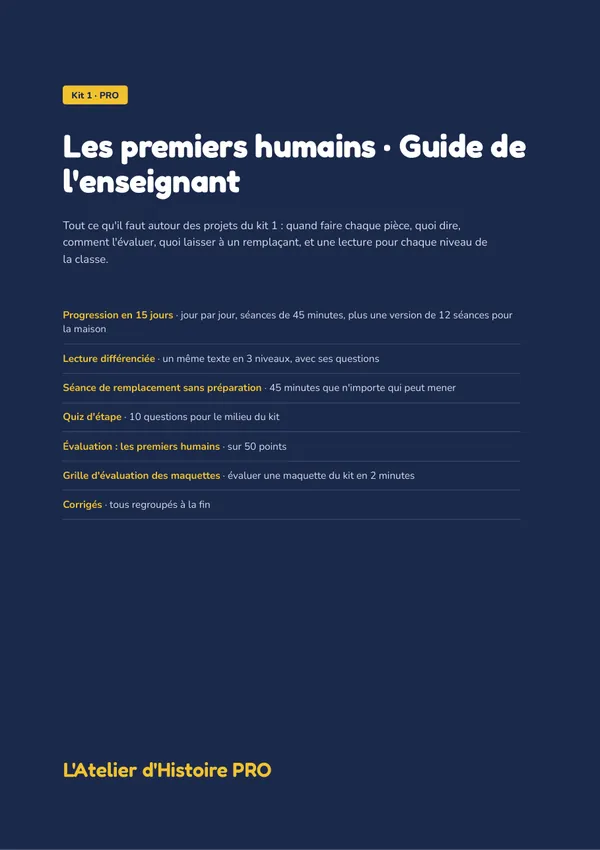
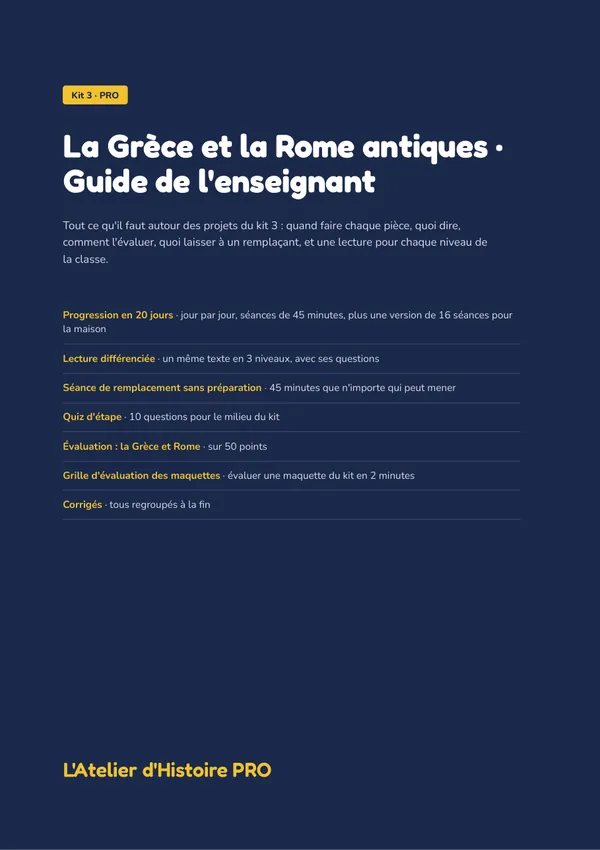
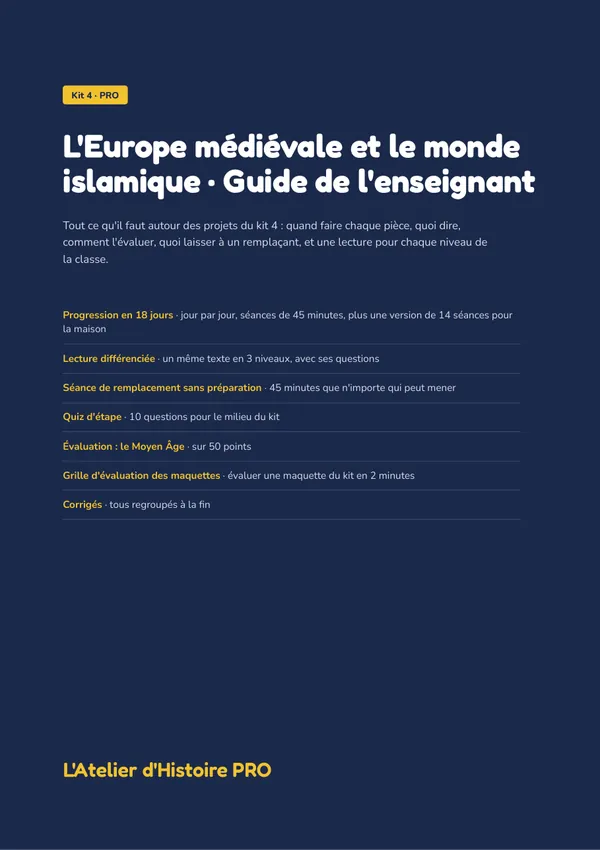
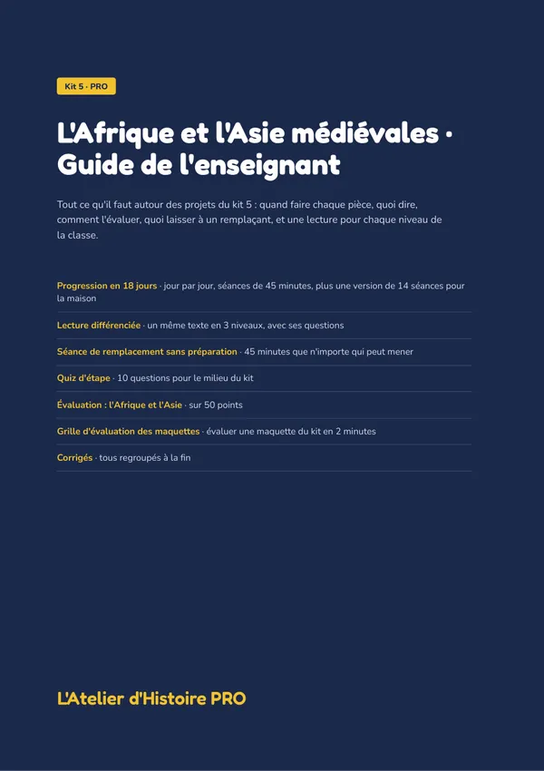
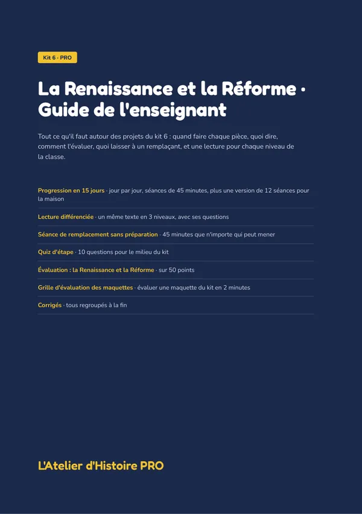
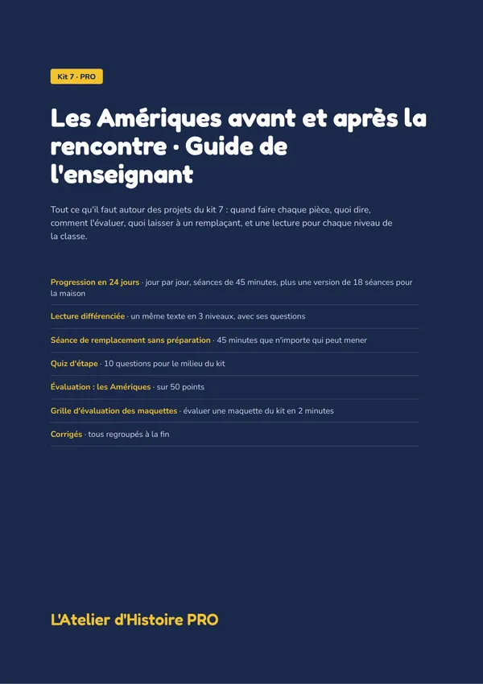
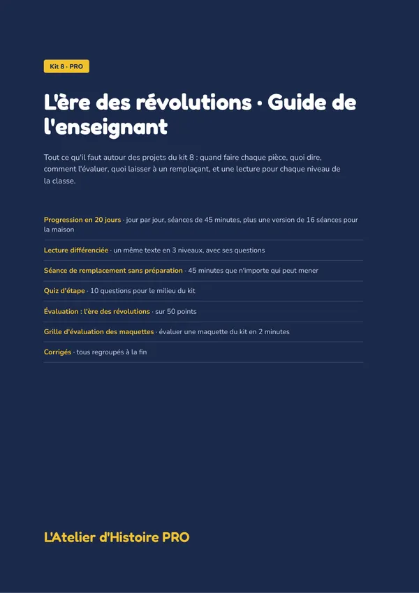
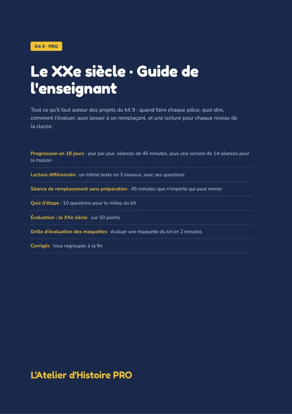

Guide · kit 4
L'Europe médiévale et le monde islamique
12 pages ⬇ Téléchargerouvrir dans le navigateur


Guide · kit 7
Les Amériques avant et après la rencontre
12 pages ⬇ Téléchargerouvrir dans le navigateur

Conseil d’impression
Imprimez sur du papier A4. Les quiz, les évaluations et les grilles se photocopient pour toute la classe.
Prochaine étape
Commencez par la programmation annuelle pour voir toute l’année, puis ouvrez le guide du kit que vous étudiez en ce moment.